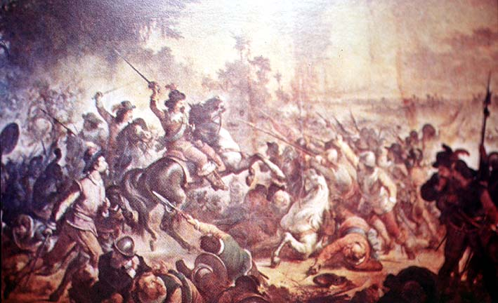

|
|  |
|
Vitor Meireles de Lima, Batalha das Guararapes
|
In Brazil, the court painter and member of the academy of fine arts Vitor Meireles created a large number of monumental paintings on historical subjects, including the 'Battle of Guararapes', depicting a clash between Brazilian militias and Dutch forces near Olinda (Pernambuco) in 1648. The 'reconquest' of Pernambuco from the Dutch as a foundational moment of the emergence of a Brazilian 'national spirit' was a popular theme in historical painting, especial after the much more recent (and traumatic) involvement in the Paraguayan war of 1865-70. Meireles´s painting –on which the artist had been working for six years, including extensive on-site research– was nonetheless met with reserve from contemporary critics on its first exhibition at the fine arts salon of 1880, where another colonial battle scene –the 'Batalha de Açaí' by his rival Pedro Américo de Figueiredo e Melo– was preferred by public consensus.
|